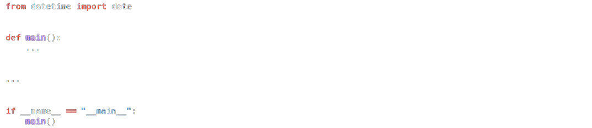

Assuming there are 365 days in a year, there are minutes in that same year (because there are 24 hours in a day and 60 minutes in an hour). But how many minutes are there in two or more years? Well, it depends on how many of those are leap years with 366 days, per the Gregorian calendar, as some of them could have additional minutes. In fact, how many minutes has it been since you were born? Well, that, too, depends on how many leap years there have been since! There is an algorithm for such, but let’s not reinvent that wheel. Let’s use a library instead. Fortunately, Python comes with a datetime module that has a class called date that can help.
In a file called seasons.py, implement a program that prompts the user for their date of birth in YYYY-MM-DD format and then sings prints how old they are in minutes, rounded to the nearest integer, using English words instead of numerals, just like the song from Rent, without any and between words. Since a user might not know the time at which they were born, assume, for simplicity, that the user was born at midnight (i.e., 00:00:00) on that date. And assume that the current time is also midnight. In other words, even if the user runs the program at noon, assume that it’s actually midnight, on the same date. Use datetime.date.today to get today’s date,
Structure your program per the below, not only with a main function but also with one or more other functions as well:
You’re welcome to import other (built-in) libraries, or any that are specified in the below hints. Exit via sys.exit if the user does not input a date in YYYY-MM-DD format. Ensure that your program will not raise any exceptions. Either before or after you implement seasons.py, additionally implement, in a file called test_seasons.py, one or more functions that test your implementation of any functions besides main in seasons.py thoroughly, each of whose names should begin with test_ so that you can execute your tests with:
Demo
Assume that this demo was recorded on January 1, 2000.
How to Test
Run your program with python seasons.py. Ensure your program prompts you for a birthdate. Type a date one year ago from today, in the specified format, then press Enter. Your program should sing print Five hundred twenty-five thousand, six hundred minutes.
Continue to modify the behavior of seasons.py, creating (predictably) incorrect versions of your implementation. Run your tests by executing pytest test_seasons.py. Do the tests you expect to fail, fail?
File does not existModify one of the functions you’ve implemented in seasons.py and imported into test_seasons.py. One of your functions might, for example, fail to raise a ValueError when it should. Run your tests by executing pytest test_seasons.py. pytest should show that at least one of your tests has failed.
You can execute the below to check your code using the code below, but be sure to test it yourself as well!
Check/python/week7/seasonsGreen smilies mean your program has passed a test! Red frownies will indicate your program output something unexpected. Goodluck 😊